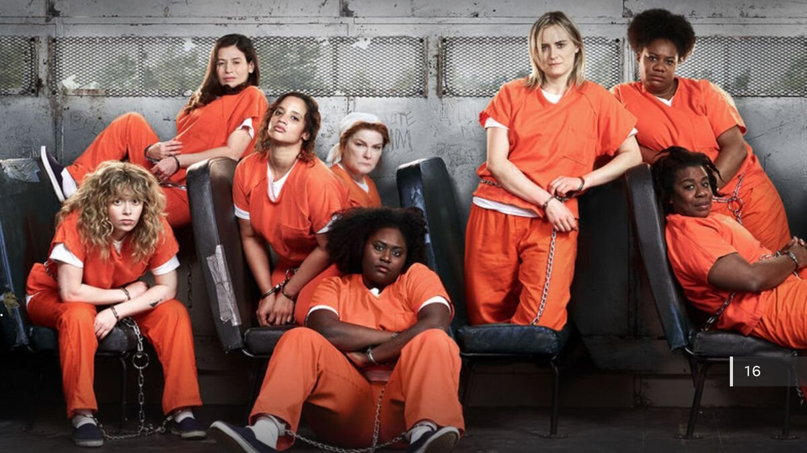
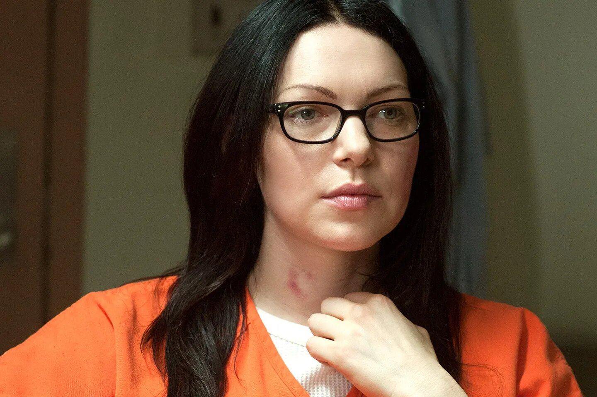
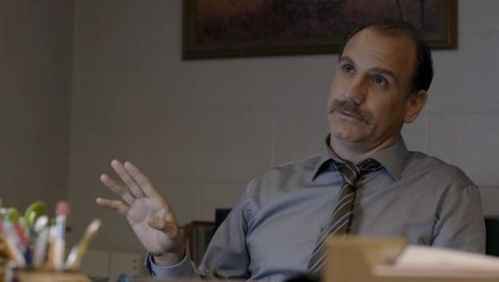

O que significa THE NEW BLACK?
Em inglês, “THE NEW BLACK” é uma expressão usada para dizer que algo é a nova moda, a nova mania, a nova bola da vez, em alta. Ou seja, algo que agora é popular é descrito como sendo “THE NEW BLACK”
Orange Is the New Black (às vezes abreviado para OITNB ) é uma série de televisão americana de comédia dramática criada por Jenji Kohan para a Netflix . A série é baseada no livro de memórias de Piper Kerman, Orange Is the New Black: My Year in a Women's Prison (2010), sobre suas experiências na FCI Danbury , uma prisão federal de segurança mínima . Produzido pela Tilted Productions em associação com a Lionsgate Television , Orange Is the New Black estreou na Netflix em 11 de julho de 2013. Sua sétima e última temporada foi lançada em 26 de julho de 2019.
Em 2016, Orange Is the New Black foi a série original mais assistida da Netflix, bem como a série original de maior duração. Foi amplamente aclamado ao longo de sua execução e recebeu muitos elogios. Em sua primeira temporada, a série recebeu 12 indicações ao Emmy , incluindo Melhor Série de Comédia , Melhor Roteiro para Série de Comédia e Melhor Direção para Série de Comédia , ganhando três. Uma nova regra do Emmy em 2015 forçou a série a mudar de categoria de comédia para drama. Para sua segunda temporada, recebeu quatro indicações ao Emmy, incluindo Melhor Série Dramática , e Uzo Aduba ganhou como Melhor Atriz Coadjuvante em Série Dramática . Orange Is the New Black é a primeira série a receber indicações ao Emmy nas categorias comédia e drama. A série também recebeu seis indicações ao Globo de Ouro , seis indicações ao Writers Guild of America Award , um prêmio do Producers Guild of America , um prêmio do American Film Institute e um prêmio Peabody.
A série começa girando em torno de Piper Chapman ( Taylor Schilling ), uma mulher de 33 anos que mora na cidade de Nova York e é condenada a 15 meses na Penitenciária de Litchfield, uma prisão federal feminina de segurança mínima no norte do estado de Nova York . Chapman foi condenada por transportar uma mala cheia de dinheiro de drogas para sua namorada Alex Vause ( Laura Prepon ), uma traficante internacional de drogas.
A ofensa ocorreu 10 anos antes do início da série e, nesse período, Chapman passou para uma vida tranquila e cumpridora da lei entre a classe média alta de Nova York . Sua acusação repentina e inesperada perturba seu relacionamento com o noivo, família e amigos.
Na prisão, Chapman se reencontra com Vause (que nomeou Chapman em seu julgamento, resultando na prisão de Chapman), e eles reexaminam seu relacionamento. Simultaneamente, Chapman, junto com os outros presos, tenta lidar com as inúmeras lutas inerentes à prisão.
Os episódios geralmente apresentam flashbacks de eventos significativos do passado de vários presidiários e guardas prisionais. Esses flashbacks normalmente retratam como um preso foi parar na prisão ou desenvolvem a história de fundo de um personagem. A prisão é inicialmente operada pelo "Departamento Federal de Correções" (uma versão fictícia do Federal Bureau of Prisons ) e posteriormente foi adquirida pela Management & Correction Corporation (MCC), uma empresa prisional privada.
Em cada temporada, a série mostra como várias formas de corrupção, cortes de financiamento por parte do proprietário corporativo para aumentar os lucros em milhões, privatização da prisão , superlotação, brutalidade da guarda e discriminação racial (entre outras questões) afetam a segurança, a saúde dos prisioneiros, e bem-estar.
Um dos principais conflitos do programa envolve o Diretor de Atividades Humanas da prisão de segurança mínima ( também conhecido como diretor, sob a nomenclatura de privatização), Joe Caputo, cujos esforços e objetivos como diretor entram em conflito constante com os interesses corporativos da MCC, que adquire a Penitenciária Litchfield como corre o risco de encerramento.
Este tema continua quando um novo diretor atencioso e com visão de futuro é contratado na Litchfield Maximum Security e, ao contrário de Caputo, na verdade institui programas educacionais e mudanças positivas. Ela é demitida por essas ações e por sua atitude em relação à corrupção corporativa, embora suas mudanças de curta duração tenham resultados profundos.